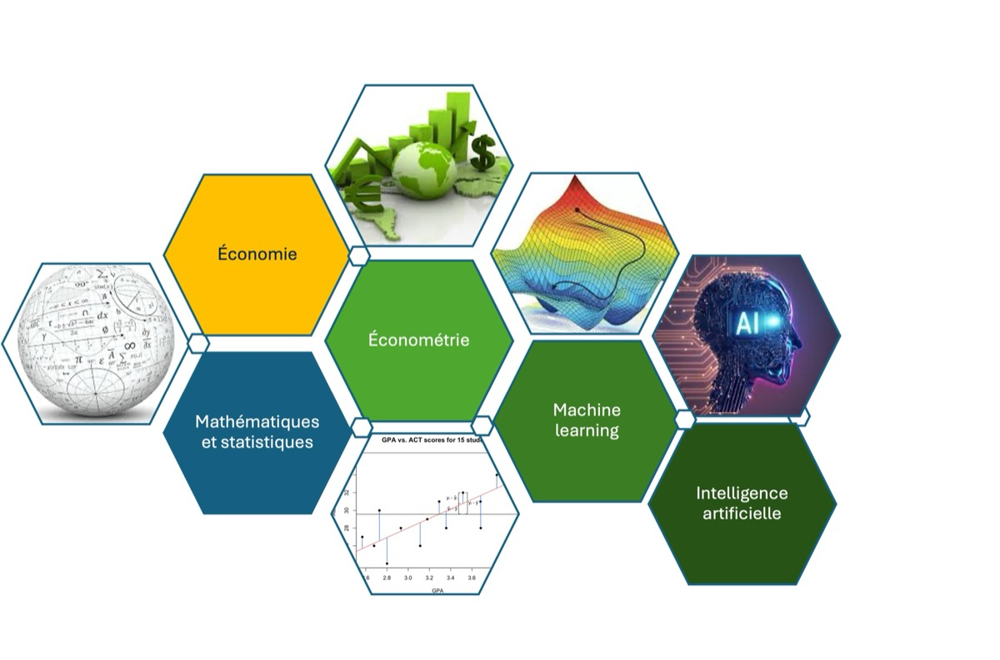
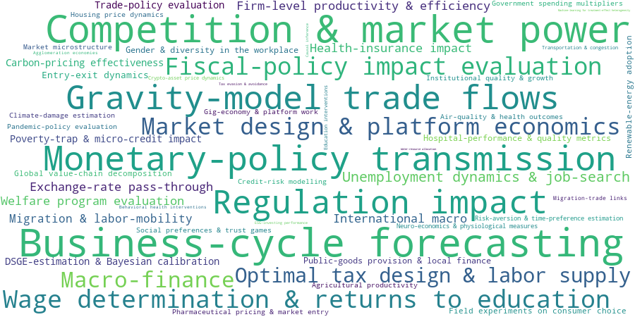
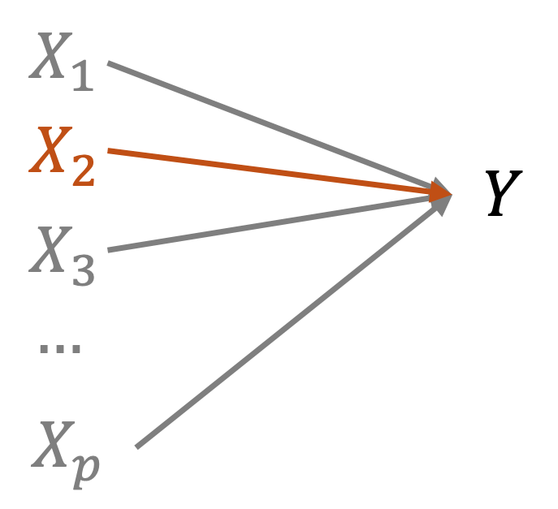
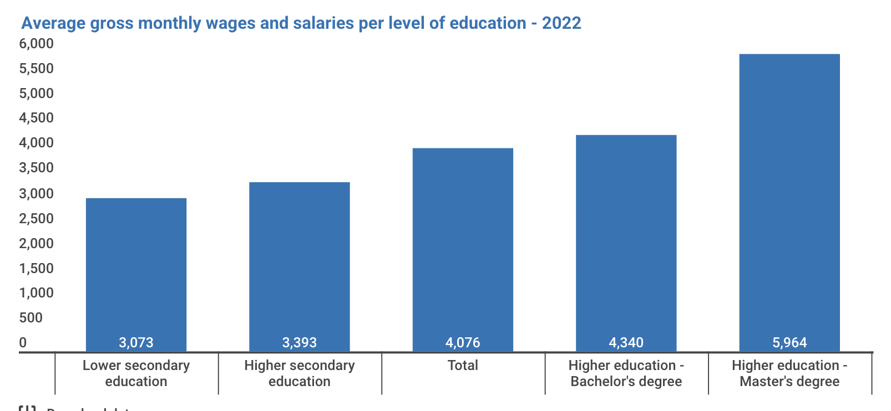
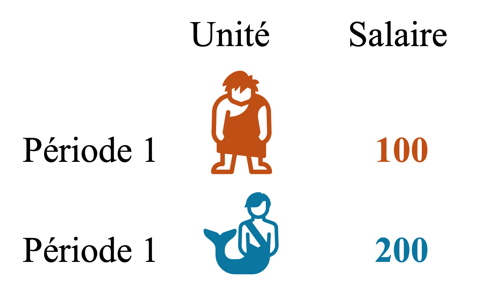
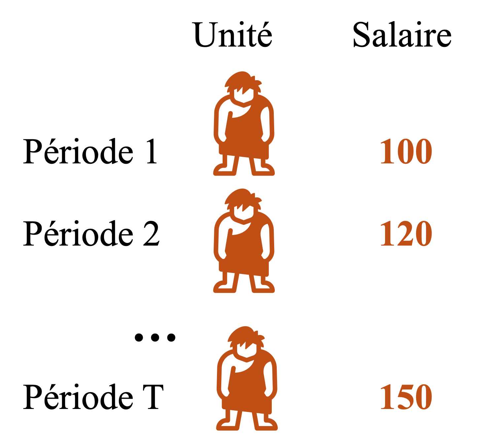
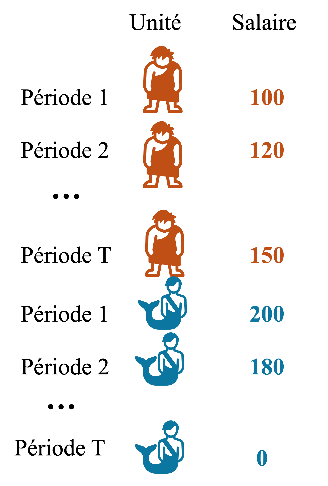
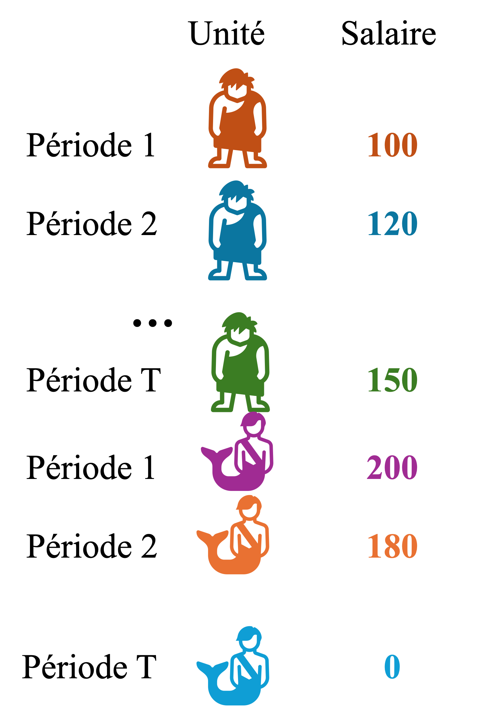
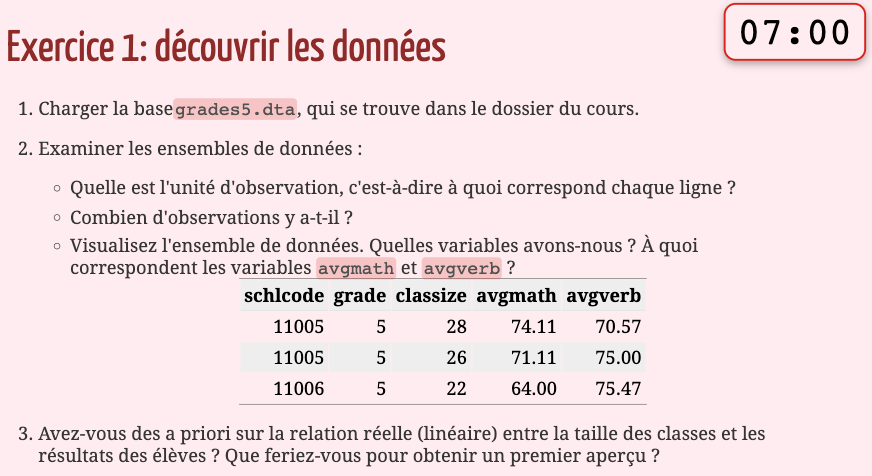
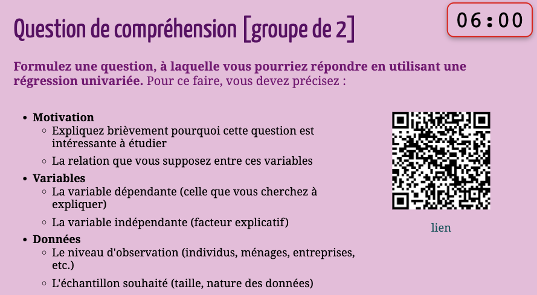

Économétrie (ECON0212)
HEC Liège
September 2026

StataL’économétrie appliquée est davantage un cadre, une approche, qu’un sujet particulier.

De nombreux autres facteurs pourraient avoir causé chacun des résultats mentionnés
On cherche à isoler l’impact causal d’un seul de ces facteurs (immigration, salaire minimum, éducation, etc.)
Exemple : effet de l’éducation sur les salaires

L’économétrie consiste à expliciter les conditions dans lesquelles on peut affirmer mesurer des relations causales.

Source : Statbel (2022). Salaires mensuels bruts moyens des travailleurs à temps plein en Belgique.
Échantillon d’individus, de ménages, d’entreprises, de villes, de régions… observés à un moment donné
Les observations sont relativement indépendantes les unes des autres
L’ordre des observations n’a pas d’importance


Les mêmes unités sont suivies au cours de plusieurs périodes
Dimensions individuelle et temporelle
L’ordre des observations dans la dimension temporelle a de l’importance

Plusieurs échantillons en coupe observés à différentes périodes
Les mêmes unités ne sont pas nécessairement suivies au cours du temps (C.-à-d., indépendantes)

Stata ?Stata est un logiciel statistique et de programmation offrant de nombreuses possibilités en termes d’analyse statistique et graphique.
Stata ?Stata est flexible et puissant : utilisable pour de nombreuses tâches (nettoyage de données, visualisation, économétrie, analyse de données spatiales, machine learning, etc.)Stata est facile d’utilisationStata dispose d’une grande collection de modules spécialisésDe nombreuses raisons, en voici quelques-unes :
Python)Stata — ce n’est pas un cours de Stata| Date | Lecture | Travaux pratiques |
|---|---|---|
| 23-09 | 0. Introduction | 1. Stata (intro) |
| 23-09 | 1. Analyse de données | |
| 30-09 | 2. Régression linéaire simple (RLS) | 2. Stata (avancé) |
| 07-10 | 3. Causalité | 3. RLS |
| 14-10 | 4. Régression linéaire multiple (RLM) | 4. Causalité |
| 18-11 | 5. Hypothèses du modèle de RLM* | 5. RLM |
| 25-11 | 6. Régressions : extensions | 6. Régressions: extensions |
| 02-12 | 7. Inférence en régression | 7. Inférence |
| 09-12 | 8. Différence-de-différences (DiD) | 8. DiD |
| 16-12 | Questions / réponses |
Note: Pas de cours le 21-10 et le 04-11.
RMercredi 9h00 - 11h00 (Salle N1a 41)
| Section | Jour | Horaire | Salle |
|---|---|---|---|
| SEG & IG | Vendredi | 11h00 - 13h00 | A CONFIRMER |
| SEG & IG | Vendredi | 14h00 - 16h00 | A CONFIRMER |
Contact par e-mail: préciser le code (ECON0212) du cours
Groupes et horaires définitifs communiqués sur lol@ après la fin des inscriptions.
| Moniteur.rices | Assistant·es | Professeure |
|---|---|---|
| A CONFIRMER | Tom Gillet — tom.gillet@uliege.be | Natalia Bermúdez — natalia.bermudez@uclouvain.be |
| → TPs | → Communication, questions, TPs | → Cours, examen |

Pour mettre en pratique les commandes vues

Pour s’approprier les concepts
Pour vérifier la compréhension des concepts théoriques et pratique clefs
Amenez votre ordinateur, mais restez concentré·es !
Projet d’économétrie appliquée (Groupes de 3 étudiants) (facultatif)
1 point bonus (sur 20), valable pour les sessions de janvier et août
À partir d’un article de recherche et de ses données :
Remise : raport (3 page max) + code reproductible
Courte évaluation individuelle portant sur le projet (5–10 minute QCM lol@)
Article, données et consignes communiqués en cours de semestre
Examen (janvier et août)
Contact
Merci à Florian Oswald et toute l’équipe de ScPoEconometrics pour leur livre et leurs ressources, ainsi que Malka Guillot pour avoir partagé les slides de ce cours.